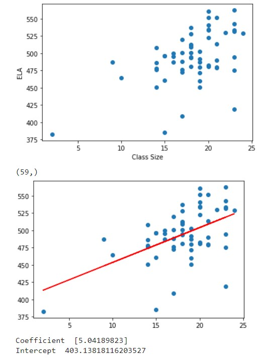
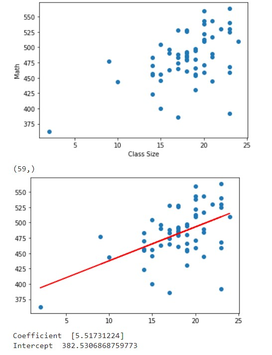
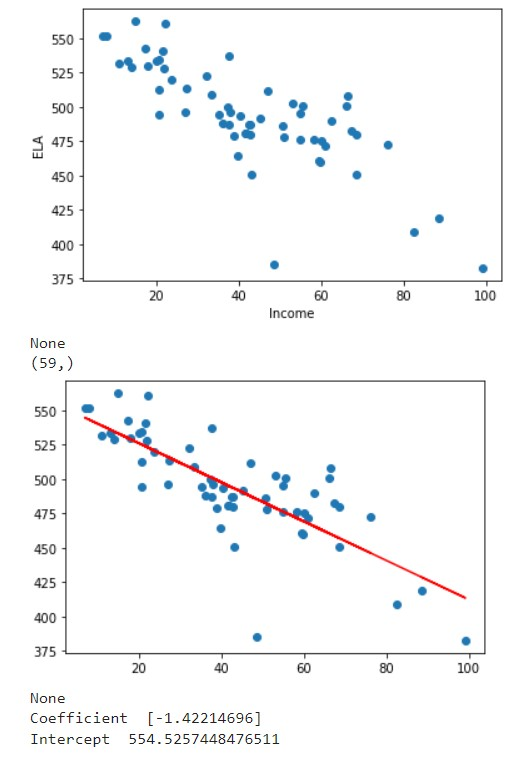
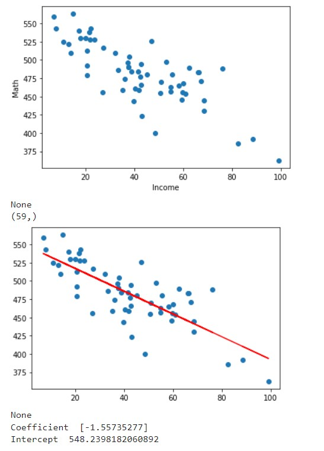

Linear Regression
Description of preliminary features engineering and preliminary feature selection, including their decision-making process. The data can’t be divided into two separate categories because of the mass amount of score variations. This led us to use linear regression over classification analysis.
Description of how data was split into training and testing sets We used scikit-learn to split the data into four data sets (two being training sets and two being testing sets) and calculated a summary report. X would hold the independent variables and Y would hold the dependent variable. After getting our model.fit, scikit-learn calculates the Y_prediction which is used to get a summary report. The summary report consists of R squared score, mean squared error, and root mean squared error.
The following pictures show the following results between the Math & ELA results between the factors of class size and schools with low-income families.
Class Size % ELA Scores

Class Size % Math Scores

School % of low-income families & ELA Scores

School % of low-income families & Math Scores
